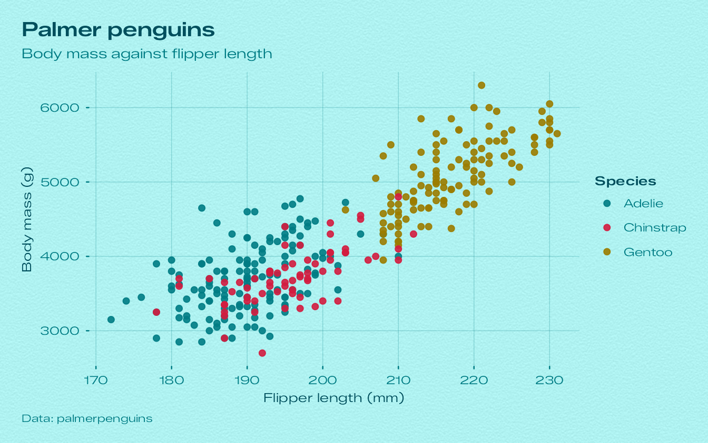
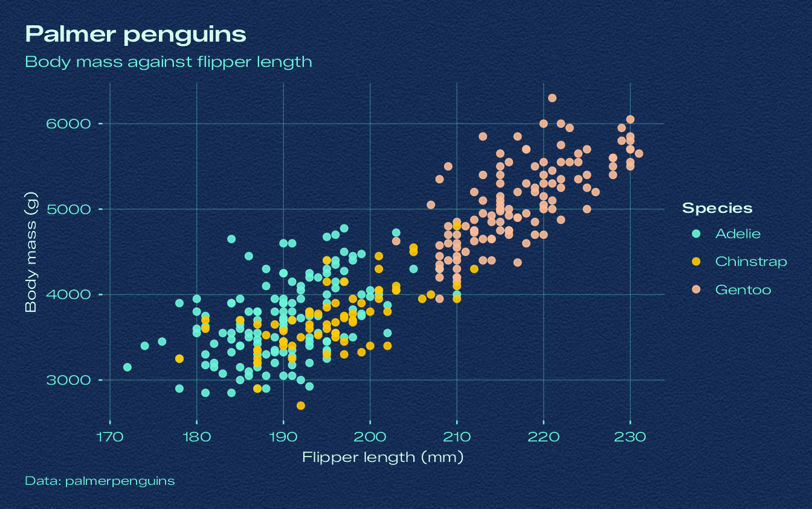
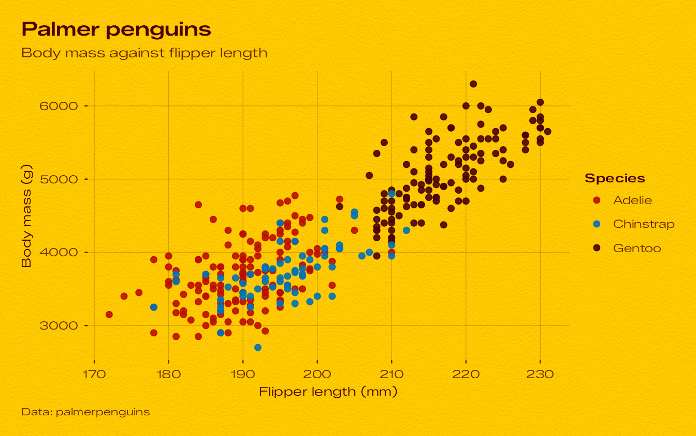
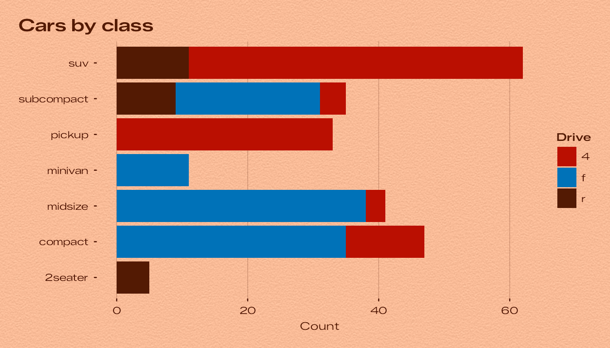
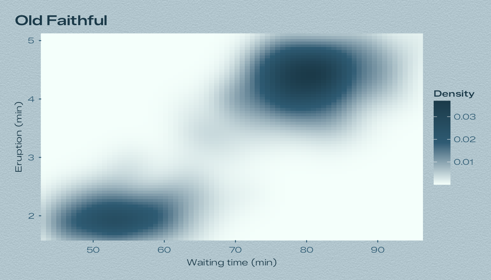
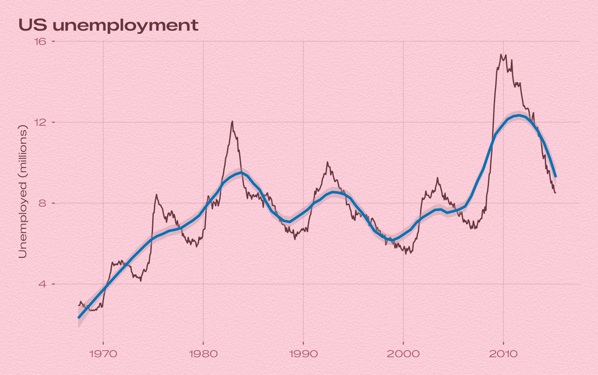
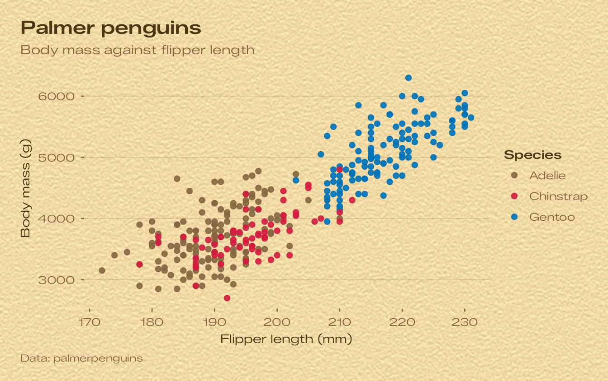
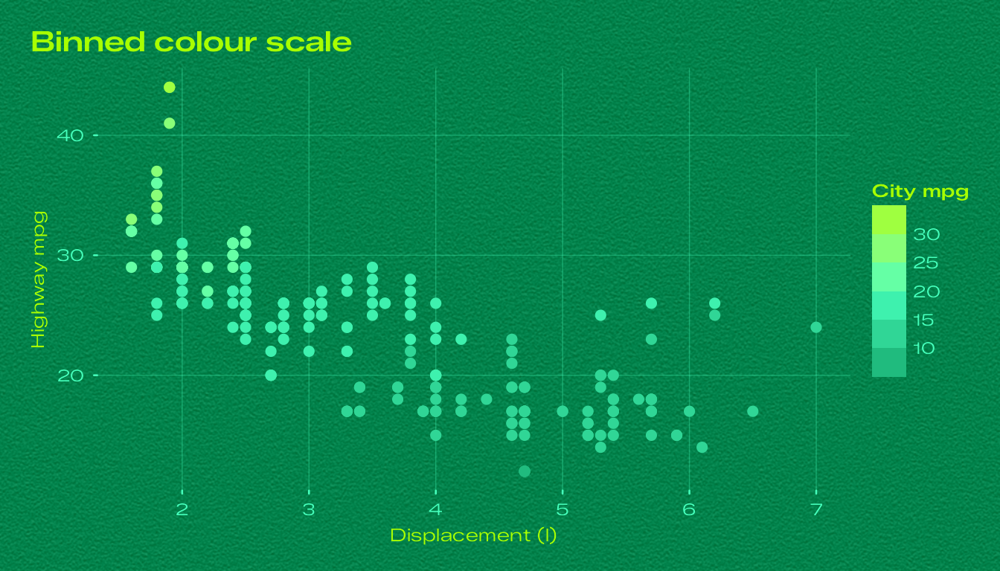
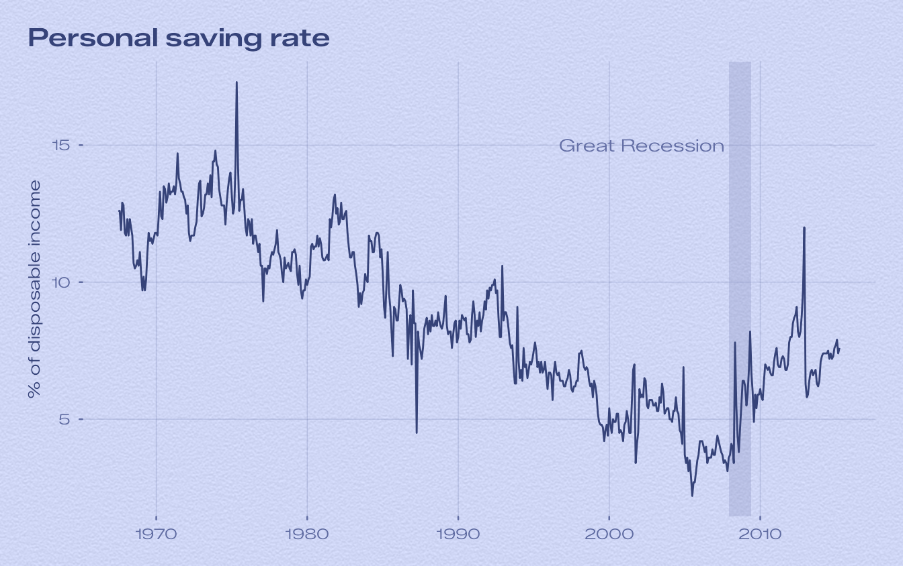
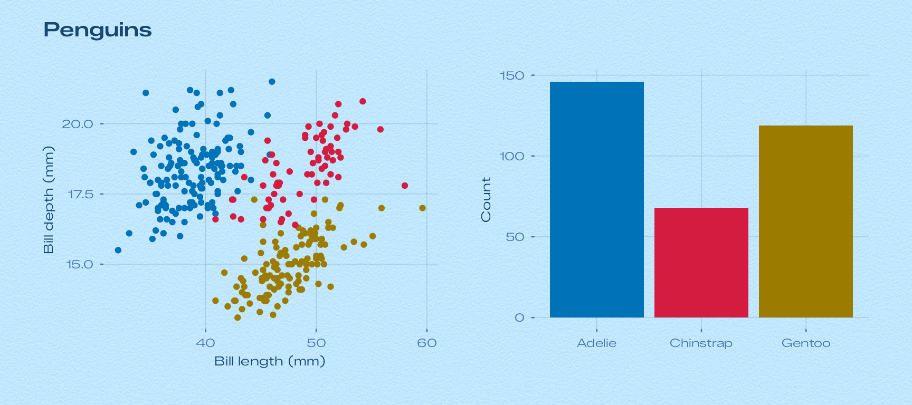

bauhaus turns a ggplot into one of the sixteen day dials of the Bauhaus Clock screensaver. Each theme lays the plot on the dial’s paper plate with the screensaver’s fine grain, sets type in the screensaver’s typeface, and colours text, grid lines, geoms and scales with the inks measured from that dial.
A first plot
Build a plot as usual and add theme_bauhaus(). The
default dial is Turquoise, the screensaver’s own default.
penguins <- na.omit(palmerpenguins::penguins)
p <- ggplot(penguins, aes(flipper_length_mm, body_mass_g, colour = species)) +
geom_point(size = 1.8, alpha = 0.9) +
labs(
title = "Palmer penguins",
subtitle = "Body mass against flipper length",
x = "Flipper length (mm)", y = "Body mass (g)", colour = "Species",
caption = "Data: palmerpenguins"
)
p + theme_bauhaus()
Pick another dial by name. Case, spaces and underscores don’t matter,
so "Signal Blue", "signal-blue" and
"signal_blue" are the same dial.
bauhaus_dial_names(display = TRUE)
#> [1] "White" "Turquoise" "Glacier" "Ocean" "Tennis"
#> [6] "Signal Blue" "Salmon" "Yellow" "Beige" "Pistachio"
#> [11] "Lavender" "Rose" "Sky Blue" "Cream" "Slate"
#> [16] "Noir"
p + theme_bauhaus("ocean")
Each dial also has a shortcut: theme_bauhaus_ocean(),
theme_bauhaus_signal_blue() and so on.
p + theme_bauhaus_yellow()
What a theme sets
A Bauhaus theme is a complete ggplot2 theme. It sets:
| Part | Taken from the dial |
|---|---|
| Plot background | The plate, lifted by 13/255 as the screensaver lifts it, with the paper grain at the strength measured for that dial. White has no grain; Tennis has the most. |
| Type | Zalando Sans Expanded, the screensaver’s typeface. Titles and strip labels use the semibold weight. |
| Titles, axis titles, default geom colour | The hour-numeral ink. |
| Subtitle, caption, axis labels, ticks, grid | The minute-track ink. Ticks and grid lines have round ends, like the track’s ticks. On Cream and Slate, whose track ink is very faint, the colour is pushed towards the numeral ink until it reads clearly. |
| Discrete colour and fill | The dial’s eight-colour palette. |
| Continuous colour and fill | The dial’s sequential palette. |
Accent (e.g. geom_smooth()) |
The second colour of the discrete palette. |
So the theme alone gives you matching colours. Here is the same chart with discrete and continuous fills:
bars <- ggplot(mpg, aes(class, fill = drv)) +
geom_bar() +
coord_flip() +
labs(title = "Cars by class", x = NULL, y = "Count", fill = "Drive")
bars + theme_bauhaus("salmon", grid = "x")
ggplot(faithfuld, aes(waiting, eruptions, fill = density)) +
geom_raster() +
coord_cartesian(expand = FALSE) +
labs(title = "Old Faithful", x = "Waiting time (min)", y = "Eruption (min)", fill = "Density") +
theme_bauhaus("glacier")
Single-colour geoms use the numeral ink, and smoothers use the accent:
ggplot(economics, aes(date, unemploy / 1000)) +
geom_line(linewidth = 0.5) +
geom_smooth(method = "loess", formula = y ~ x, span = 0.3) +
labs(title = "US unemployment", x = NULL, y = "Unemployed (millions)") +
theme_bauhaus("rose")
Options
theme_bauhaus() takes the usual base_size,
base_family and header_family, plus a few of
its own:
-
grid: which major grid lines to draw,"xy"(the default),"x","y"or"none". -
grain:TRUEfor the dial’s measured grain,FALSEfor a flat plate, or a number to set the strength (standard deviation in 8-bit code values). -
grain_density: grain samples per inch. The default, 150, matches the screensaver on a Retina laptop screen; lower it for a coarser grain.
p + theme_bauhaus("beige", base_size = 12, grid = "y", grain = 9, grain_density = 90)
To use a dial for every plot in a session, set it once:
theme_set(theme_bauhaus("pistachio"))Scales
The theme already sets each dial’s palettes as the defaults. Add a scale when you want another dial’s palette, a reversed one, or other scale arguments.
ggplot(mpg, aes(displ, hwy, colour = cty)) +
geom_point(size = 2) +
scale_colour_bauhaus_b("tennis", n.breaks = 6) +
labs(title = "Binned colour scale", x = "Displacement (l)", y = "Highway mpg", colour = "City mpg") +
theme_bauhaus("tennis")
| Scale | Data | Palette |
|---|---|---|
scale_colour_bauhaus_d(),
scale_fill_bauhaus_d()
|
discrete | eight colours |
scale_colour_bauhaus_c(),
scale_fill_bauhaus_c()
|
continuous | sequential ramp |
scale_colour_bauhaus_b(),
scale_fill_bauhaus_b()
|
binned | sequential ramp in steps |
The palettes are also available as plain colour vectors and palette functions, for base graphics or other packages:
bauhaus_palette("turquoise")
#> [1] "#007C84" "#D31C3F" "#9B7C00" "#004F5D" "#5D6195" "#00753E" "#970000"
#> [8] "#152D55"
bauhaus_palette("turquoise", type = "sequential", n = 5)
#> [1] "#E4FEFF" "#84BBC0" "#007C84" "#006570" "#004F5D"
pal_bauhaus("noir")(3)
#> [1] "#E0E0DC" "#FFC800" "#00AFEC"See the palettes article for every dial’s colours.
The raw colours
bauhaus_colours() returns everything measured for a
dial, which is handy for annotations:
col <- bauhaus_colours("lavender")
col
#> paper plate numeral track steel
#> "#CFD6F5" "#C2C9E8" "#364379" "#6570A6" "#E2E3E8"
#> hand lume lume_hand hub shadow_core
#> "#DFE1E7" "#EEFCFC" "#E9F6F5" "#D2D4DA" "#5D6195"
#> shadow_ambient shadow_contact
#> "#787EB4" "#2B366C"
ggplot(economics, aes(date, psavert)) +
annotate("rect",
xmin = as.Date("2007-12-01"), xmax = as.Date("2009-06-01"), ymin = -Inf, ymax = Inf,
fill = col[["shadow_ambient"]], alpha = 0.25
) +
geom_line() +
annotate("text",
x = as.Date("2007-09-01"), y = 15, label = "Great Recession", hjust = 1,
colour = col[["track"]], family = bauhaus_font_family(), size = 3.5
) +
labs(title = "Personal saving rate", x = NULL, y = "% of disposable income") +
theme_bauhaus("lavender")
Fonts and graphics devices
The package bundles Zalando Sans Expanded (SIL Open Font License) and registers it with systemfonts when it loads, so nothing needs installing. Devices built on systemfonts find it automatically:
-
ragg:
ggsave()uses it for PNG, JPEG and TIFF whenever ragg is installed. In R Markdown and Quarto, set the chunk optiondev = "ragg_png". In RStudio, choose Tools › Global Options › General › Graphics › Backend: AGG. Positron uses ragg when it is installed. - svglite for SVG.
Other devices don’t know the bundled font. pdf(),
postscript() and the default macOS screen device (Quartz)
fall back to Helvetica, and the default Windows screen device to its
system sans. To get the real typeface there, render text with
showtext:
bauhaus_showtext() # registers the fonts with showtext and turns it on
pdf("plot.pdf", width = 7, height = 4.5)
print(p + theme_bauhaus())
dev.off()Or use the Cairo PDF device,
ggsave("plot.pdf", device = cairo_pdf), after installing
the font files from bauhaus_font_files() on your
system.
Saving
ggsave("penguins.png", p + theme_bauhaus("ocean"), width = 7, height = 4.5, dpi = 300)ggsave() takes the background colour from the theme. The
grain is drawn as a raster image, which works on every device but makes
PDF and SVG files larger. For vector output you can switch it off for
the whole session:
options(bauhaus.grain = FALSE)Combining plots with patchwork
Each plot draws its own grained background. When you combine plots with patchwork, give the whole layout the theme too, so the space around and between the plots is paper as well:
library(patchwork)
a <- ggplot(penguins, aes(bill_length_mm, bill_depth_mm, colour = species)) +
geom_point(show.legend = FALSE) +
labs(x = "Bill length (mm)", y = "Bill depth (mm)")
b <- ggplot(penguins, aes(species, fill = species)) +
geom_bar(show.legend = FALSE) +
labs(x = NULL, y = "Count")
(a | b) +
plot_annotation(title = "Penguins", theme = theme_bauhaus("sky_blue")) &
theme_bauhaus("sky_blue")